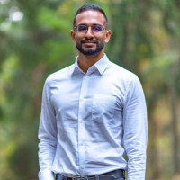

princeps091@gmail.com
LinkedIn: www.linkedin.com/in/vipin-kumar-bioinfo
mobile: +47 48681884
Nationality: French
# Vipin Kumar
## Executive Summary
* 10 years data analysis/Bioinformatics experience
* Algorithm and pipeline development
* Project management and development
* Proficient in Python and R
## Working Experience
#### Post-doctoral fellow (NCMM, Universitet i Oslo, 2019/12 - present)
* Designed and implemented multiple projects integrating various kinds of technologies and data types
* Developped original algorithms, pipelines (snakemake), computational routines to inform experimental validation
* Secured EU-funding to realise the project
* Supervised intern to implement code optimisation and feature extension
#### Research assistant (RIKEN BDR, Osaka JAPAN, 2018/12 - 2019/11)
* Developed original algorithm for clustering high-throughput data
* Implemented routine pre-processing pipeline for Raman spectroscopy and mass spectrometry data
## Representative Publications:
* [Highthroughput data clustering](https://doi.org/10.1093/nar/gkaa004) - **Vipin Kumar**, Simon Leclerc, Yuichi Taniguchi, BHi-Cect: a top-down algorithm for identifying the multi-scale hierarchical structure of chromosomes, Nucleic Acids Research, Volume 48, Issue 5, 18 March 2020, Page e26,
* [Open science database development](https://doi.org/10.1093/nar/gkad1059) - JASPAR 2024: 20th anniversary of the open-access database of transcription factor binding profiles, Nucleic Acids Research, Volume 52, Issue D1, 5 January 2024, Pages D174–D182,
* [Integrating Spectroscopy with Transcriptomics](https://doi.org/10.1016/j.bpj.2019.11.2002.) - Germond, Arno, **Vipin Kumar**, Taro Ichimura, Takaaki Horinouchi, Tomonobu Watanabe, and Chikara Furusawa. 2020. “Toward Predicting Gene Expression and Metabolic Functions from Label-Free Raman Imaging of Living Cells.” Biophysical Journal.
* Rossini, R., **Kumar, V.**, Mathelier, A. et al. [MoDLE](https://doi.org/10.1186/s13059-022-02815-7): high-performance stochastic modeling of DNA loop extrusion interactions. Genome Biol 23, 247 (2022).
* Abouleila, Yasmine, Kaoru Onidani, Ahmed Ali, Hirokazu Shoji, Takayuki Kawai, ChweeTeck Lim, **Vipin Kumar**, et al. 2019. “Live Single Cell Mass Spectrometry Reveals Cancer-Specific Metabolic Profiles of Circulating Tumor Cells.” Cancer Science 110 (2): 697–706.
* Ohno, Masae, Tadashi Ando, David G. Priest, **Vipin Kumar**, Yamato Yoshida, and YuichiTaniguchi. 2019. “Sub-Nucleosomal Genome Structure Reveals Distinct Nucleosome Folding Motifs.” Cell 176 (3): 520–34.e25.
## Education & Qualifications
* PhD Bioinformatics, (2014-2018) University of Copenhagen, Denmark/BDR RIKEN Osaka Japan
* MSc Bioinformatics, (2012-2014) University of Copenhagen, Denmark
* MA (Cantab)/BA Natural Sciences, (2009-2012), University of Cambridge
## Misc. Information
* Languages: English (fluent), French (fluent/native), Norweigan (beginner)
* Community-involvement:
* Vice/President RSG Norway (2020-present)
* Representative Officer UiODoc (2020-2022)
* NCMM trainee committee member (2023)
* Moderator.Host for various university panel discussion